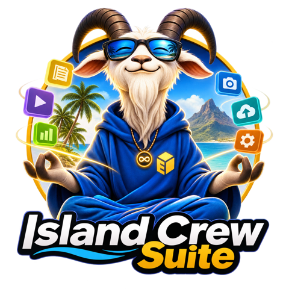

Island Crew Suite
Free desktop software · macOS Apple Silicon · Version 1.1.0
Programas para negocios de hostelería que funcionan en tu propio ordenador. Gratuitos: sin pagos, sin suscripciones, sin registro y sin publicidad dentro del programa.
Instalación · Actualización · Desinstalación · Preguntas frecuentes · Changelog · Soporte
Los cuatro programas
Lanzador y panel de actividad de los demás programas.
Incluido en la descarga
Cartas digitales interactivas con un vídeo por plato y código QR.
Incluido en la descarga
Publicaciones, calendario de contenido y anuncios.
Incluido en la descarga
Producción musical: canciones, instrumentales y jingles.
Incluido en la suite 1.1.0 (Mac)
Descargas
Incluye Cabra Beats (música). Probado en macOS 26.4.1; la generación de música de principio a fin aún no está confirmada.
Lanzamiento pendiente
Fecha de publicación: 23 de noviembre de 2026
Archivo:
IslandCrewSuite-1.1.0-macos-arm64.zip (71 743 610 bytes)SHA-256:
c6406506cb95f40ab78bd6092c334c1dadf094d0a22897ddf3b7c86a7339502aInstalador disponible — RC3 — pendiente de validación en Windows real. Todavía no se ha probado en un ordenador Windows físico, no está firmado y Windows puede mostrar un aviso de seguridad.
Lanzamiento pendiente
Archivo:
IslandCrewSuite-Setup-1.0.0-RC3-win-x64.exe (28 429 608 bytes)SHA-256:
6eccc2decd5dc41fdc57805f102a4f37aa0fde71e22d7ab7814c0a40ea94da24Requiere el Visual C++ Redistributable 2015-2022 (x64). Limitaciones en
ESTADO-VALIDACION-WINDOWS-RC3.md.Cada plataforma tiene su paquete independiente. Los botones se activarán cuando las descargas estén publicadas y verificadas. Hasta entonces no hay enlaces de descarga.
Requisitos
macOS: Mac con chip Apple (M1 o posterior), unos 600 MB libres, sin permisos de administrador. Python y ffmpeg van incluidos. Otras versiones de macOS distintas de la probada (26.4.1) no se han verificado.
Windows (RC3): Windows 10 u 11 de 64 bits y Visual C++ Redistributable 2015-2022 (x64). No necesita permisos de administrador. Versión candidata no validada en Windows real.
Cómo verificar el SHA-256
En Terminal: shasum -a 256 y arrastra el ZIP. El resultado debe ser idéntico a la huella de la tarjeta de descarga y al archivo SHA256SUMS de la release. Si no coincide, no lo abras.
Instalación
- Comprueba la huella:
shasum -a 256 IslandCrewSuite-1.1.0-macos-arm64.zipy compárala con la de arriba. - Descomprime el ZIP.
- Clic derecho en
Instalar-Mac.command→ Abrir → Abrir (el programa aún no lleva firma de pago de Apple). - En el paso 3 del asistente pega la licencia libre:
eyJjYWR1Y2EiOiBudWxsLCAiY2xpZW50ZSI6ICJMaWNlbmNpYSBsaWJyZSBJc2xhbmQgQ3JldyBTdWl0ZSAxLjAiLCAiZmFicmljYXMiOiBbImFudW5jaW9zIiwgImNhcnRhIiwgInB1YmxpY2FjaW9uZXMiXX0=.O_dncBAOe4YpHmS_CtyZoblfl2wvCkhRtLjGAzghHOHMPiINdTbqS8GAx03x6ZwSamOPpLpxpf7taoegjNvxBw==
Verificar e instalar en Windows (RC3)
En PowerShell: Get-FileHash .\IslandCrewSuite-Setup-1.0.0-RC3-win-x64.exe -Algorithm SHA256; debe coincidir con la huella de la tarjeta de Windows. El instalador no está firmado, así que SmartScreen puede avisar: no lo ejecutes si el hash no coincide o no lo has descargado de la fuente oficial. Tus datos se conservan al desinstalar.
Aviso de seguridad de macOS
Esta aplicación no está notarizada por Apple (la notarización requiere una cuenta de pago). Por eso macOS puede avisar al abrir el instalador. No hace falta desactivar ninguna protección del sistema: usa clic derecho → Abrir y confirma. Si prefieres no hacerlo, comprueba el SHA-256 y espera a una versión notarizada.
Seguridad y privacidad
Sin telemetría: no envía tus datos a Island Crew. Solo se conecta a internet si usas funciones con servicios externos (Google Gemini/YouTube, Groq, Meta, Pixabay, Pexels) con tus propias claves. Las claves se guardan en un archivo local de tu usuario, sin cifrar y con lectura solo para ti, no en el Llavero de macOS. La licencia libre se comprueba sin conexión.
Limitaciones
- macOS: solo chip Apple. Windows: RC3 sin validar en un equipo real y sin firma.
- Sin firma ni notarización de Apple: macOS avisa al abrir.
- Cabra Beats (Mac) va dentro de la suite 1.1.0; sus motores de IA se descargan de internet (unos 20 GB).
- Las integraciones con servicios externos dependen de tus claves y cuotas y no están garantizadas.
- El programa prepara el contenido; la publicación en redes la haces tú.
Preguntas frecuentes
Sí. No hay pagos, suscripciones ni registro.
Usa clic derecho → Abrir sobre el instalador.
No. El desinstalador elimina los programas, no tus cartas ni tu configuración.
No para abrir los programas; sí para los textos y traducciones automáticos. Son gratuitas y las obtienes tú.
hola@islandcrew.es
Historial de versiones
Primera versión: Centro de Control, Carta Viva y Cabra Social (Publicaciones y Anuncios). El Centro respeta la carpeta de datos elegida en el asistente y avisa si esa carpeta no está disponible. Detalle en CHANGELOG.md.
Avisos legales y licencias
Software de Maximiliano Olmos Sánchez para Island Crew Marketing, bajo la licencia incluida en LICENSE y la licencia libre de esta página. Componentes de terceros (Python, ffmpeg, Pillow, segno y otros) con sus licencias en THIRD-PARTY-NOTICES.txt. Revisión interna realizada por el propio autor; no es una auditoría externa ni una certificación. Privacidad · Limitaciones conocidas.
Software de Maximiliano Olmos Sánchez para Island Crew Marketing. Componentes de terceros: ver THIRD-PARTY-NOTICES.txt.